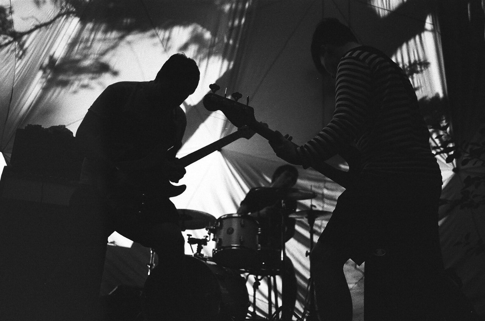
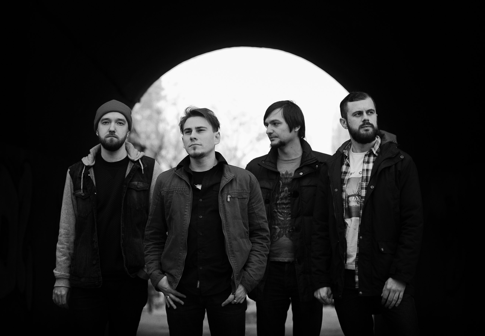
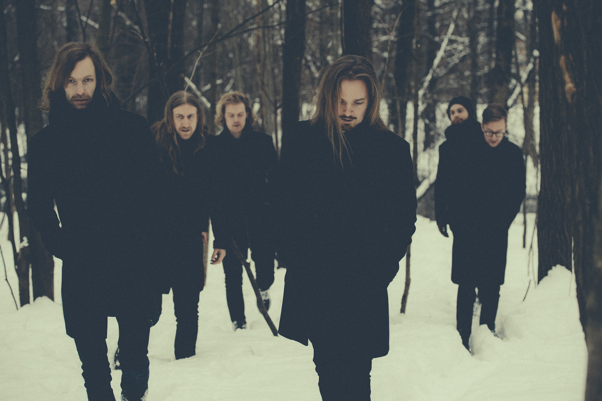
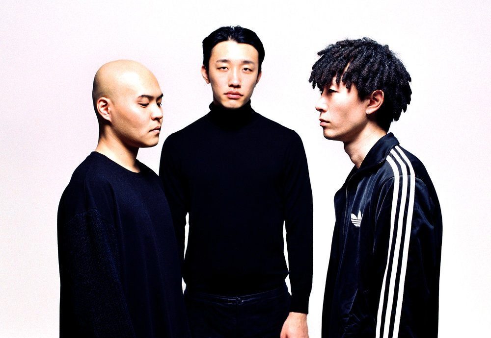
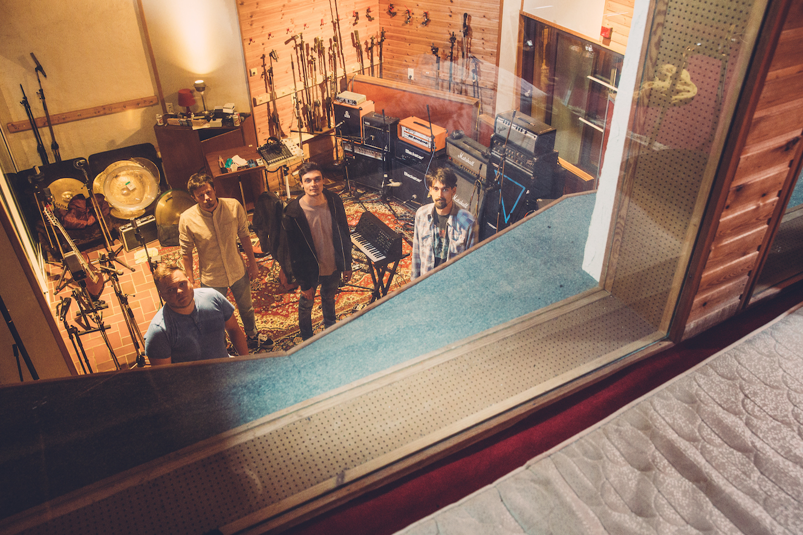
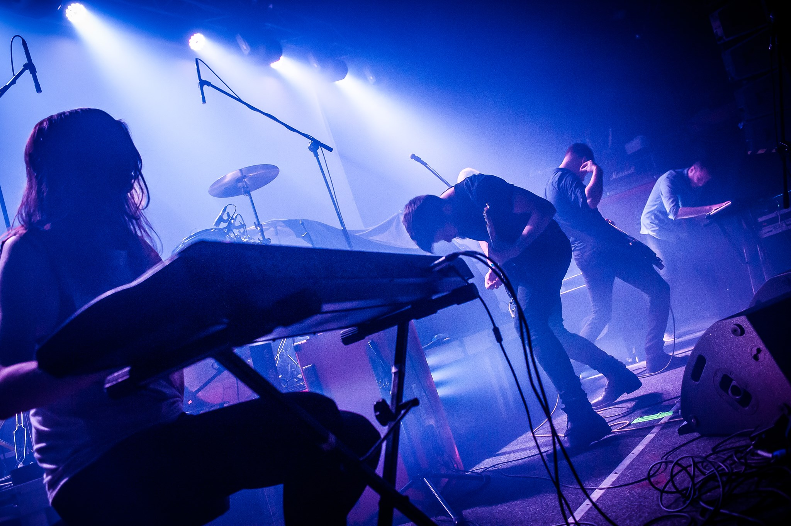
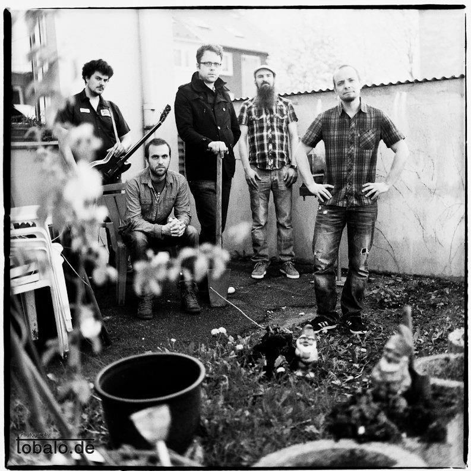
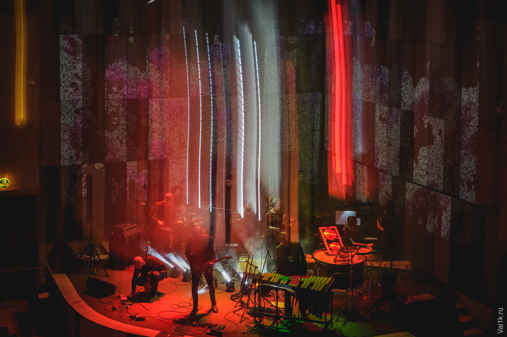
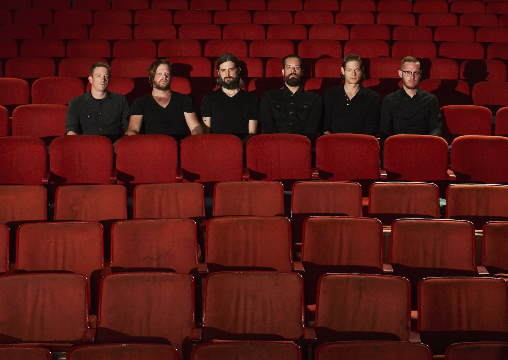

Please LIKE our event on Facebook to keep updated on programme and news regarding the 2018 edition.
The instrumental post-rock/post-metal act of HEGY will arrive at VIVID. Brandishing their signature experimental sound and custom visual material. The Budapest-based trio had their debut in 2016 with '80 Miles Out & 6 Feet Under', an excellent album that unfairly was overlooked by the press. The band are currently writing and recording their much-anticipated follow up which is expected to be released fall 2018. Several samples of the new material will be performed at VIVID. The name HEGY translates from Hungarian as 'mountain' or 'edge', perhaps alluding to their massive sound and genre-exploring material. VIVID. audience can look forward to an immersive concert rich in alternative/stoner/noise references.
Out of St. Petersburg come the pioneers of celestial blackgaze TRNA (RU) to rekindle the link between urban humankind and nature with their stunning atmospheric black metal. The Russian group can brandish their freshly-cut album 'Earthcult' (2018), an epic catharsis of blackened post-metal that Arctic Drones already calls a "contender for record of the year". Released on prestigous label Elusive Sound, the 65-minutes/4 tracks album will be performed live for the very first time in Europe at VIVID. 'Earthcult', the third album to their name, explores the precariousness of our unity with nature in the global metropolis of today. Believing that nature provides crucial nourishment both physically, emotionally, and spiritually, TRNA intensely strives to restore this sacred bond through music. Arctic Drones called 'Earthcult' "a thoroughly compelling listening experience", stating that "the maturity of songcraft is nothing short of striking". Their second album 'Lose Yourself To Find Peace' (2016) also was greeted with rave reviews and named among Arctic Drones' favourite albums that year. A further testament to their musicality, TRNA toured extensively with Show Me A Dinosaur (RU) even prior to their 2015 debut with 'Pattern of Infinity'. Be sure to join us Friday night as the powerhouse of TRNA satiates our deepest yearnings towards nature, beauty and the night sky.
THE BEST PESSIMIST is a post-rock band from Odessa, Ukraine. The band was formed in 2009 and is led by the brilliant musician and composer Serhii Lunov. THE BEST PESSIMIST is successfully mixing genres like post-rock as well as electronic music towards beautiful, piano-driven, harmonic musical landscapes that together with his own visuals will capture both your heart and your soul. The band has since the beginning steadily performed tours and digitally released records, but in 2018 THE BEST PESSIMIST’s only performance will be at VIVID a post-rock festival, don’t miss out!
Spurv, what can we say, we have to admit that we have had a special thing for this band since they performed a great show at the first edition of our festival. SPURV is an Oslo based post-rock band, formed in 2011, and in June 2018 they will release their second full-length album, Myra at Fysisk Format. “Myra” is Norwegian for “the marsh” and the album is described as a wordless exploration of the enigma of existence through intense and melodic instrumental music, noisy drones, orchestral clusters and emotional post rock/metal. SPURV may remind you of GODSPEED YOU! BLACK EMPEROR, but still they got their own sound; as put by Eloi Mayano-Vinet in Arctic Drones: “Spurv, however, usually likes to get to business right away and, while the songs progress in intensity, it’s never in a linear way. The ups and downs from slow melodic passages to melodic explosions are a challenge for the listener and remind us of progressive rock, structurally. The climax can sometimes be within the first minutes and therefore, as listeners, we are constantly wondering what’s going to be around the corner.” We love it!
Grant The Sun emerges from the deep woods of eastern Norway to entice VIVID. with their smart instrumental metal and flowing melodies. Their music defies clear-cut labels as they lead the listener through soundscapes reminiscent of Russian Circles, Cloudkicker, Extol and Meshuggah. Featuring members from acts such as Beaten to Death and Insense, GRANT THE SUN hit listeners in 2017 with a progressive album that quickly earned them international attention. The EP sees them "masterfully combining heavy riffs and hard-hitting, complex rhythms with catchy, prog-driven melodies" (Terrorizer Magazine UK), showcasing their "unique twist on multi-layered instrumentality" (Metal Hammer UK). Arrive early to be sure to experience GRANT THE SUN blow the roof off our limited capacity club venue Vaktbua on Saturday afternoon.
VIVID proudly presents an intercontinental addition to our program! Korean group Raw By Peppers (KR) consists of three friends who met as jazz students at Art College in South Korea in 2010. Their debut EP 'Spaceship Out Of Bones' (2016) set the tone for their evolving indie sound of dreamy and atmospheric space rock. Their first full-length album 'Cosmos' (2017) was nominated for Best Rock Album at the 2018 Korean Music Awards. The album was recorded in one single take to capture the energy that the group generates when performing. 'Cosmos' includes mastering work done by Grammy-nominee Emily Lazar and was released on the label Craft And Jun. It generated a large following in the Korean indie music scene and earned them gigs at major events such as the Primavera Sound Festival in Barcelona. Raw By Peppers recently moved to Berlin where they showcase their hypnotic universe of impro-laden post-rock to ever more fans.
The instrumental freight train that is MANTIS brings melodic yet danceable guitars, thunderous drums and clamouring basslines. Their influences range from the giddiness of ASIWYFA and brutalism of Russian Circles, to the grooves of LCD Soundsystem and the italofunk scene. The band released two EPs in 2016 that proved their intensive inventiveness, earning them spots at festivals such as Roadburn, Rock Herk and AFF. Their fresh album 'Magnolia' (2018) demonstrates how well the band's self-proclaimed 'pogojazz' works in the full-length format. Belgian MANTIS plays post-rock, noise and doom to a backdrop of geometric visual material sure to cause both fascination and smooth moves!
Polish alternative group SPOIWO creates drifting, harmonious landscapes of deeply emotional instrumentalism. Their 2015 debut 'Salute Solitude' stunned both audiences and media, earning them several awards including the DOKI music prize for Best Artist, Best Album and Best Newcomer that year. The release rocketed SPOIWO to the top of many post-rock critics' list of favourites, including Best Newcomer Post-Rock Band (Arctic Drones, Post-rock PL) and Best Album (PostrockerNL+PL). The group of five aptly describes their music as "elements of madness and sadness exploding together in a joyful manner". Falling somewhere between cinematic and post-rock music, SPOIWO continues to inspire awe with their "sheer beauty of emotional expression unbound by any constraints" (Arctic Drones). Their thunderous live performance at venues such as Belgian Dunk! Festival has awarded them DOKI for Best Live Act (2016) as well as support gigs for bands like Explosions in the sky, God is an Astronaut and Tides from Nebula.
The Samuel Jackson Five finally emerge from their slumber to play VIVID.! The post-rock veterans return with brand new material to add to the classics you already know. Unlike some darker acts in the post rock genre, SJ5 maintains a positive and playful attitude towards making music. Their unique expression is inspired by prog icons such as King Crimson and Yes, and draws elements from dark jazz improv, krautrock and folk. SJ5 have released five albums since their genesis in 2001, including what many argued to be THE instrumental album of the year, 'Easily Misunderstood' (2005). We are sure fans will be thrilled to hear The Samuel Jackson Five return to their roots with their new instrumental material!
Prepare for beautiful cosmic vibes and stunning visual material as symphonic space-rock act Mooncake dock their ship at VIVID. 2018! Mooncake is a neoclassical/new symphonic post-rock orchestra based in Moscow that will thrill you with their expansive sound and sonic glee. As one of the leading groups in the Russian instrumental music scene, Mooncake has shared stage with bands such as God is an Astronaut, Explosions in the sky, Caspian and Russian Circles. Their debut 'Lagrange Points' (2011) made critics scramble for adjectives and has more than one million streams on Spotify on five continents. While sometimes compared to Pink Floyd and Mogwai, their five studio albums have proven that Mooncake has their own unique sound. Their musicality reflects their deep fascination with infinite space and moves between rapture and grief, catchy melodies and flowing atmosphere. This galactic orchestra even has a spectacular in-house show at the Moscow Planetarium where a full-dome multimedia performance takes the audience on an artistic odyssey through space. After extensive touring in Russia, China and the Baltic, the group performed at Dunk! 2017 and finally return to Western Europe for VIVID. 2018. Mooncake is currently working on their sixth album release and expect it from the record press just in time for VIVID.
It is with great pleasure that we announce Caspian (US) as the headliner to toll the final tones of VIVID 2018! The Massachusetts-borne post-rock mastodons of Caspian are one of the most powerful live acts of the genre, widely acclaimed by critics and audiences alike. Their Europe-exclusive appearance at VIVID is destined to be one for the books – don't miss out! The instrumental post-rock soundscapes of Caspian express raw dynamic emotions, channelled into wordless narratives hinged on song structure and epic melodies. Nevertheless, ever since the descriptively entitled debut EP 'You Are the Conductor (2005)', listeners have been invited to read themselves into these narratives. Caspian's trademark fluidity allows us to explore our own mental hallways as we ride their musical waves through cinematic inner landscapes of our own making. Each subsequent record refined and pushed their sound into more surprising territory, driven by the band's unwavering ability to craft tonal structures that the listener could inhabit: 'The Four Trees' (2007) with its skyward glance, 'Tertia' (2010) with its fists in the dirt, and 'Waking Season' (2012) looking for the human in the machine. Caspian since experienced a tremendous loss with the passing of founding bass player Chris Friedrich. Needing an emotional outlet as well as a re-examination of their _raison d'être_, Caspian retreated to studio and returned with the highly acclaimed 'Dust and Disquiet' (2015). Grief is present throughout the album, yet the focus seems to be on reconnecting our imagination with the physical world. An incredibly diverse yet patiently determined album, including a surprising cut with lyrical vocals on 'Run Dry', 'Dust and Disquiet' expands the band's build-and-release rock through ever more figurative polarities such as quiet/loud, tired/awake and wet/dry. Unsurprisingly, the album made Arctic Drones' favourite list that year, for its "moving ride through a wide range of emotions with a spectacular climax". "The record has a genuine sincerity to it," Jamieson says, "because we are still using the creative act as a weapon to combat feelings of emptiness and isolation. It is still a mechanism used toward connection to one's self and to other people in an age of increasing separation." Their textured and explosive style of instrumental music has reached a new crescendo as evidenced by the clearly discernible lyric dead-centre in track number 5: "We're wide awake now". While the world at large may be rigged to sever the connection between our fantasies and physical realities, Caspian are expressly working to re-establish that link and manifest our imaginations through the sonic spaces they open.